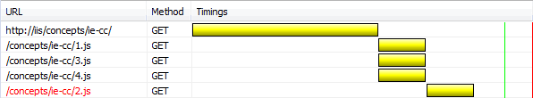
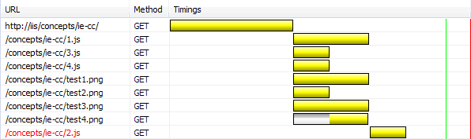
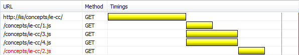
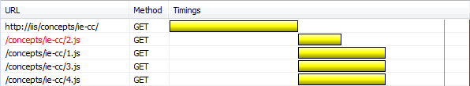
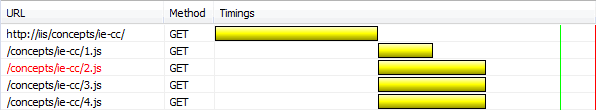

IE conditional comments and asset load order
By Keith Clark | | 3 Comments
Yesterday I was experimenting with a few ideas for decreasing the start-up time of selectivizr (something I’ll be posting about in the future). Part of the testing process was to establish if the position of the selectivizr script in a document had any affect on its start-up time. While testing I noticed an interesting side effect relating to the way assets are downloaded when they are mixed with conditional comments. I couldn’t find any specific information on this behavior so I thought I’d document my findings here.
Like most scripts and style sheets that uniquely target IE, the recommended method of inserting selectivizr into a document is to wrap it in a conditional comment, hiding it from other browsers. Inevitably these IE only scripts and styles become mixed with other unconditional assets but the way these assets are mixed together can actually alter their download order.
The code sample below shows the script ’2.js’ wrapped in a conditional comment that targets IE<9. Note that the script ’2.js’ is the second asset in the document but in IE6-8 it will actually download last.
<!doctype html>
<html>
<head>
<script src="1.js"></script>
<!--[if lt IE 9]><script src="2.js"></script><![endif]-->
<script src="3.js"></script>
</head>
<body>
<script src="4.js"></script>
</body>
</html> Time to do some testing
My test consisted of a single HTML document ‘index.html’ populated with the above markup and four JavaScript files, each consisting of a single comment. The test files were hosted on a local web server (IIS) and delivered over HTTP. The conditional comment containing the script ‘2.js’ (coloured red in the network graphs) was inserted at various points in the document and the browser was refreshed. The subsequent download sequence was captured using the Network tab in IE’s developer tools.
The following results are from the IE8 tests but the outcomes were identical in IE6 and IE7.
Test #1
Browsing to ‘index.html’ produced the following network graph:

The graph shows that ’2.js’ has loaded out of sequence when compared with the document structure. The original markup shows ’2.js’ as the second asset in the document tree yet the time line clearly shows ’2.js’ loading last, after ’4.js’.
I decided to add four images after the ’4.js’ script to see if theses assets would have any impact on the download order – they did:

As you can see, ’2.js’ isn’t just the last script to download, it’s also the last file to download.
Test #2
Next, I rearranged the scripts a little. The conditional comment containing ’2.js’ was moved below the ’3.js’ script:
<script src="1.js"></script>
<script src="3.js"></script>
<!--[if lt IE 9]><script src="2.js"></script><![endif]--> Refreshing the page produced the same result, the download order was out of sequence. ’2.js’ was still the last file to download:

Test #3
Moving the conditional comment before the other <script> tags caused something else to happen:
<!--[if lt IE 9]><script src="2.js"></script><![endif]-->
<script src="1.js"></script>
<script src="3.js"></script> Refreshing the page revealed the <script> s were now downloading in the correct sequence. Moving the conditional comment before all the other <script> tags had restored the download order:

Something else had happened. In the first three network graphs you’ll notice that ’2.js’ didn’t start downloading until the other files had finished. It was being blocked. The graph above clearly shows all four ‘.js’ files downloading in parallel.
What about IE9?
Until now my tests had been focused on selectivizr’s target browsers, IE6-8 but I wanted to see what happened in IE9. I restored the markup to it’s original state (moving ’2.js’ back to it’s position as the 2nd script) and removed the version operator (the ‘lt IE 9′ part) from the conditional comment:
<!--[if IE]><script src="2.js"></script><![endif]--> After making the changes I reloaded the page in IE8 to check my results were correct before moving on to IE9. They were different! This time the network graph showed that the download order has been correctly preserved and the .js files had downloaded in parallel:

So it seems that conditional comment operators can affect download order too. But that’s not all, the download order is also preserved if the page and it’s assets are loaded directly from the file system (with or without a conditional operator).
When I did eventually test in IE9 I found the download order was correct in every test, so this anomaly has disappeared in the latest version of IE.
Wrapping up
In IE8 and below the download sequence of assets varies depending on the position of conditional comments, the operators used and where the files are being served from. IE9 (and probably IE10) always download assets in the document order.
It’s important to note that although the sequence in which assets are downloaded can differ they are always processed in document order.
Finally, I recreated this test using <link> ‘d style sheets instead of <scripts> s. The outcome was identical, the style sheet download order differed depending on the configuration of the conditional comment but the style sheet cascade still reflected the document order.
3 comments
Stoyan Stefanov has a “fix” to unblock downloads. http://www.phpied.com/conditional-comments-block-downloads/
I tried adding an empty conditional comment to my page but it didn’t make any difference in my tests.
What I did find interesting was removing version targeting operators (lt or eq) from any conditional comments did correct the issue.
That’s a really interesting article. I found the results very interesting and we are going to a go at moving some of our conditionally commented assets around on the page to see what sort of effect it has.
Im really looking forward to the post on Selectivizr start-up times.